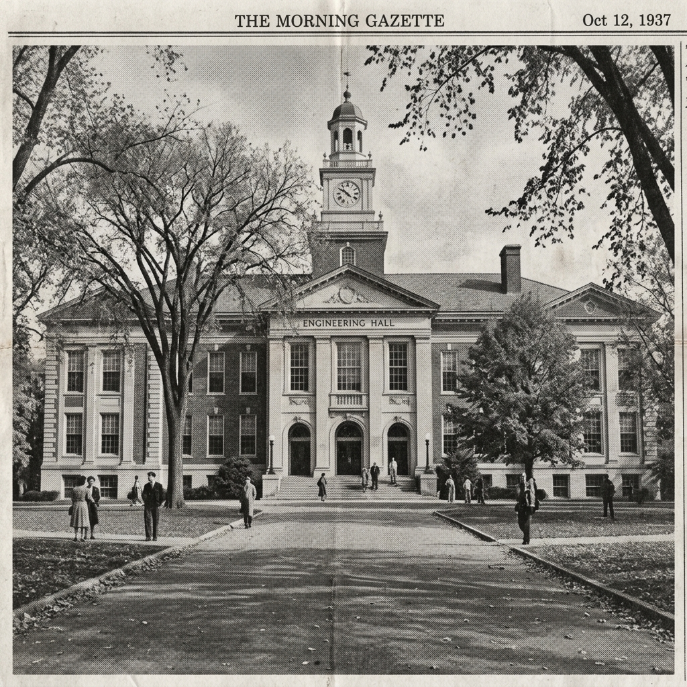

A NEW ERA BEGINS: ASWIN K ANIL LAUNCHES DIGITAL BROADSHEET
By Aswin K Anil | Exclusive
.jpeg)
W
elcome to the inaugural issue of The Aswin Chronicles. In an age where digital media moves at the speed of light, we take a moment to pause and reflect through the classic, trusted medium of the broadsheet—reimagined for the web.
This space serves as a testament to my journey, thoughts, and technical explorations. It is designed not just to share information, but to provide a reading experience that commands attention and respect, much like the morning papers of yore.
As we navigate through the complexities of modern software development, design, and life itself, this publication will document the milestones. From late-night coding sessions to philosophical musings on the nature of technology, expect a diverse range of topics covered with rigorous detail and a touch of vintage flair.
The Professional Journey: From Startup to Software Engineer
Career Milestone
In 2023, the entrepreneurial spirit took hold with the founding of Queshuts. This venture represented a significant step into the world of business and technology, providing invaluable lessons in leadership and innovation.
Although Queshuts concluded its operations in 2024, the experience paved the way for a successful period of freelance work from 2024 to 2025. This phase allowed for a deepening of technical skills and the delivery of bespoke solutions to a diverse range of clients.
The journey reached a new height in April 2026, with the appointment as a Software Engineer at Wistora IQ Solution, a leading software development company. This role marks a significant commitment to building cutting-edge solutions in a dynamic team environment.
Wistora IQ Solutions is a technology-driven firm based in Ernakulam, Kerala, specializing in secure, scalable, and high-performance custom software. From web and mobile application development to UI/UX design and digital marketing, the company focuses on accelerating business growth through innovative technical solutions and industry best practices.
Academic Foundations Forged at AVIT
Special Report

Education is the bedrock of any serious endeavor. For me, that foundation was rigorously established at the Aarupadai Veedu Institute of Technology (AVIT), an esteemed institution operating under the aegis of Vinayaka Mission's Research Foundation (Deemed to be University).
The time spent in the halls of AVIT was characterized by intense academic rigor and practical engineering challenges. It was here that theoretical concepts met real-world applications, shaping my approach to problem-solving and innovation.
Vinayaka Mission University's commitment to excellence provided an environment where curiosity was nurtured and technical acumen was honed. The experiences gathered there continue to influence my professional methodology to this day.